UNIVERSE-JS
This is a mostly complete javascript port of my TI-84 plus CE program UNIVERSE-84. In this, you can simulate orbital mechinics, somewhat accuracte temperature predictions, and planetary collisions. The controls for your camera are just mouse controls. You can change the selected item on the side using the up/down arrow keys and change it with enter. Change your selected planet by using either the right/left arrow keys or you can just click on it. You can speed up time using . and slow it down using , The distance in the top left corner is the entire width of your screen. The time-warp per frame can also be seen in the top left
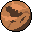 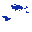 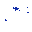 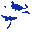 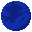 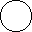 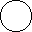 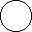 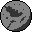 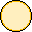 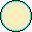 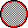 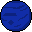 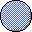